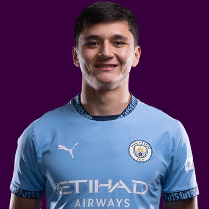

PITCHKEEP
Premier League ranks
Player File · DEF MCI · Premier #205

Abdukodir Khusanov
DEF · Man City · age 22 · £5.5m
2025/26 Premier League
| Year | Starts | Min | G | A | xG | xA | CS | GC | Bonus | YC | Sleeper | FPL |
|---|---|---|---|---|---|---|---|---|---|---|---|---|
| 2025/26 | 15 | 1427 | 0 | 0 | 0.65 | 1.21 | 6 | 13 | 3 | 2 | 71.4 | 67 |
Plus
- 71.4 Sleeper BPL 2025 points (Pitch #197).
- Consensus 178.88 vs Sleeper #197 — the industry still believes more than 2025/26 counted.
Minus
- Board spread 63–261 (FPL EP Next to FPL ICT Index).
PitchKeep Take · The Premier
Abdukodir Khusanov is a defender for Man City, age 22, £5.5m. The Premier ranks him 205th overall by splitting Sleeper BPL 2025 (#197, 71.4 points) with the consensus of 8 other boards (178.88). The industry still has him 18 spots ahead of the 2025/26 Sleeper count. The Premier pays that reputation something, not everything. Brand does not outrun a down year, and a down year does not erase a player Man City still builds around.
The 2025/26 Premier League line is 15 starts and 1427 minutes, 0 goals and 0 assists, 6 clean sheets, 13 goals against, 27 tackles and 96 CBI. Official FPL scored it at 67 points (3.2 per match) with 3 bonus. Sleeper's table turned the same counting stats into 71.4. Defenders get 10 a goal, 7 an assist, 6 a clean sheet, and −2 a goal against. CBI at 0.4 and tackles at 1 are how a centre-back cracks the overall 50.
Underlying: 0.65 xG, 1.21 xA, 1.86 xGI. The defensive events are the floor: 27 tackles, 96 clearances/blocks/interceptions, 6 shutouts. Sleeper is built to notice that. ICT and xGI boards are not, which is why a centre-back's spread on this desk is usually ugly and still informative. The friendliest board is FPL EP Next at 63; the coldest is FPL ICT Index at 261.
Market: £5.5m, 1.8% owned into the 2026/27 FPL start, 9 boards on the file. That ownership is a leftover. Either the public missed a real season or the public correctly decided the role is not repeatable. The Premier's rank is our vote. If we have him inside the first 80 and they have him at 0.4%, that is a Sleeper buy. FPL's own EP-next is 2.5. ICT 43.9.
Instruction: he is on the 400, which is already a statement, and he is not a star. Stash in Sleeper if the minutes are real. Do not let a Pitch screenshot make you start him over a Premier top-80. Nearby on The Premier: Brennan Johnson, Estêvão Gonçalves, Benjamin White. Versus The Pitch (Sleeper-only #197), the hybrid moves him down to #205. That move is the third list doing its job.
Age 22 is the other half of a hybrid. The 2025/26 counting line is one season. The Athletic-style youth lean on this desk exists specifically so a Man City kid does not get stuck behind a 32-year-old who had a nice bonus year. Sleeper still has to see the minutes. 15 starts is the beginning of a case, not the end of one.
Full-backs and centre-backs separate on this desk by attacking events. 0 goals and 0 assists are how a defender outruns his GA column. Without those, you are betting 6 clean sheets and the CBI stream (96) against 13 goals against at −2 a piece. Man City's 2026/27 defensive shape is therefore half of this player's rank. The other half already happened, across 15 starts.
How to use the file: The Pitch is the Sleeper-only 400 (he is #197 there). The Premier is the 50/50 with every other board we track. Attack, Midfield, Defence, and Keepers re-rank the same Sleeper table by position. BK Value on this page follows The Premier when you are on the hybrid calculator and The Pitch when you are on the Sleeper calculator. Same curve either way — 12,000 at 1.01. Unranked sources are skipped, never treated as 999, which is why a player missing from Yahoo's XI is not secretly ranked 400th.
Sleeper vs FPL
Same 2025/26 line, two scoring tables
Board graph
Spread 63–261 · 9 sources
Tape · 2025/26 Premier League
Khusanov vs Liverpool 2026 | Why He’s Man City’s New Defensive King!
Every Board
Spread 63–261 · 9 sources
| Source | Rank |
|---|---|
| FPL EP Next | 63 |
| FPL GW1 Ownership | 136 |
| LiveFPL community | 136 |
| Sleeper BPL 2025 | 197 |
| FPL Price Board | 198 |
| FPL 2025/26 Points | 204 |
| FPL Draft | 204 |
| FPL xGI | 229 |
| FPL ICT Index | 261 |
On The Premier nearby — Brennan Johnson (#203) · Estêvão Gonçalves (#204) · Benjamin White (#206) · Antonee Robinson (#207)